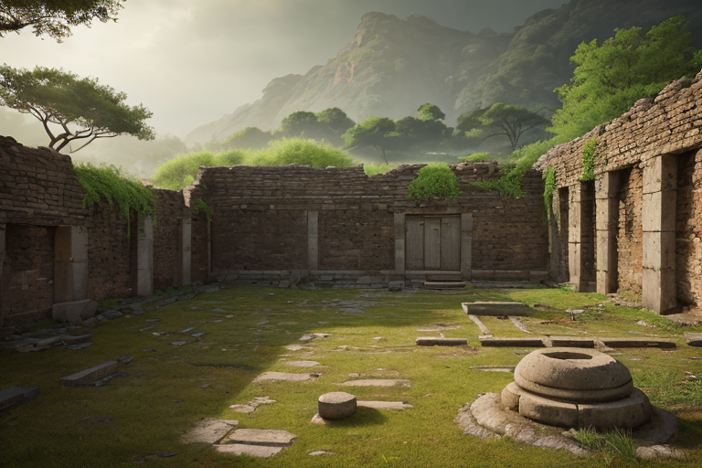
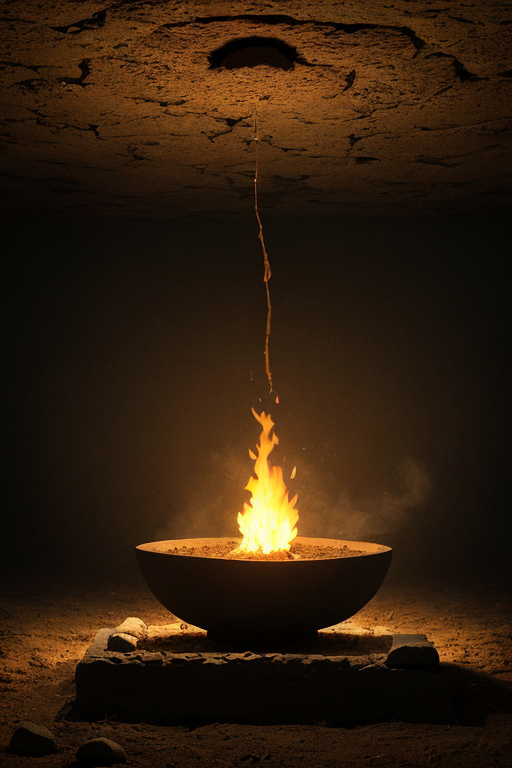
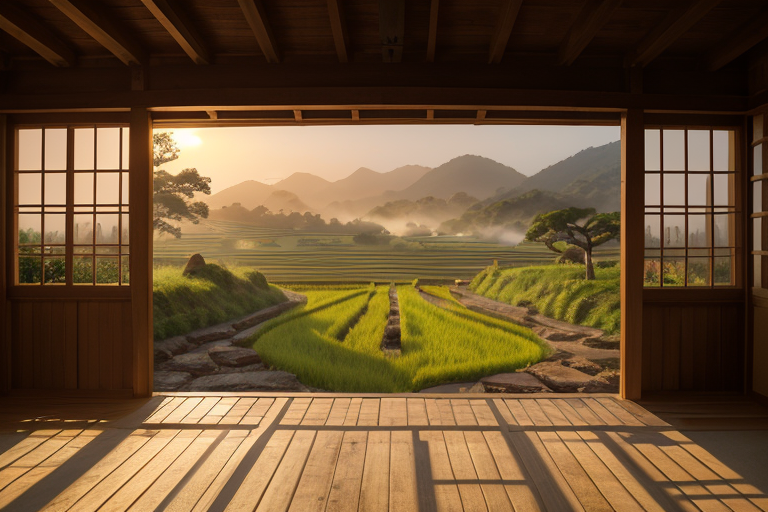
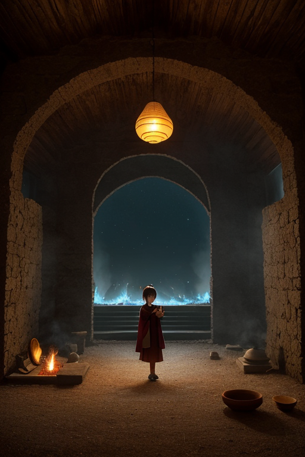
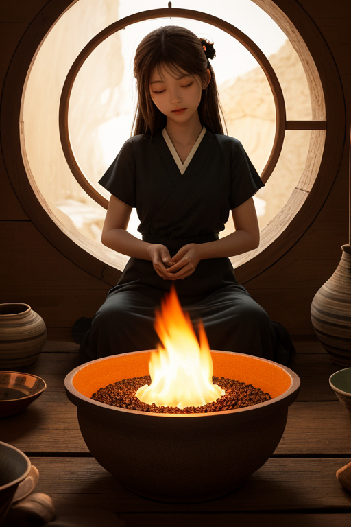

第一章 現実の佐賀
あなたはまだ気づいていない。この土地にも、王がいることを。
吉野ヶ里遺跡の弥生の森は、深い静寂に包まれていた。復元された高床式倉庫の影が、午後の低い陽に長く伸びる。ここには、二千年という時間の堆積がある。土器の破片が語るのは、生活の営みと、それが突然、あるいはゆっくりと途絶える歴史の現実だ。訪れる人々は、その広大な跡地に、何かを失った空虚さと、それでも続いてきた何かを、静かに感じ取る。
その静寂の底で、歪みは生じていた。地盤のごくわずかなひずみ。有明海を震源とするプレートの、目には見えない緊張。それは巨大な災害というより、この土地の記憶そのもののように、じわりと蓄積されていく種類のものだった。
遺跡の片隅、土塀の陰に、一人の男が立っていた。サガリア・アンバーである。彼の目は、足元の土を見つめている。そこには、微細な亀裂が走っていた。彼は何も言わず、ただその場に佇み続ける。彼の内側では、琥珀色の静かな火が、土地の軋みと共振し、ほんの少し、その緊張を吸い取っていた。消すことはできない。ただ、今日という日にここを訪れた誰かが、何気ない幸運――転ばない、躓かない――を手にする確率を、微調整するだけだ。

第二章 歪みの兆候
吉野ヶ里遺跡の環濠に、夕陽が沈んでいく。弥生の祈りが層になったこの場所では、時折、地中の記憶が微かに震える。今日も、ごく小さな歪みの兆候が、遺跡の北端を掠めた。それは、過去の祭祀の熱が、現代の無意識の願いと共鳴し、わずかに地盤を揺さぶるようなものだ。
サガリアは環濠の縁に立つ。彼の背後で、妖精アンベラが掌をかざす。土から立ち上る目に見えない熱気――人々が「歴史の重み」と感じるそのエネルギーを、陶土を捏ねるように整えていく。歪みは消せない。彼らにできるのは、その波長を変えることだけだ。熱すぎれば冷まし、乱れていれば整える。有田の窯で培われた、静火による焼成の制御が、ここでは目に見えぬ祈りの熱圧制御となる。
彼は問うた。静かな情熱は続くか。この土地の、表立たずとも持続する想いが、次の歪みを耐えうるか。答えはまだない。彼の内なる琥珀の火芯が、ゆっくりと鼓動を打つだけだった。

第三章 王の葛藤
吉野ヶ里遺跡の環濠に、夕陽が沈んでいく。弥生の昔から変わらぬ静寂が、広がる田園を包む。サガリア・アンバーは、復元された高床倉庫の影に立ち、自らの内面を見つめていた。
感情。それは計画にはなかった。星から派遣された時、彼は純粋な調整装置だった。歪みを検知し、静火で熱圧を制御する。ただの役割。しかし、四百年という有田焼の歴史に触れ、職人が陶土に込める無言の祈りを感じ、彼の内側に何かが蓄積されていった。琥珀の火芯が、単なるエネルギー源から、何かを「感じる」器官へと変わり始めている。
「これは、故障か」。彼は自問する。感情は判断を鈍らせる。歪み調整には、冷静な計算が必要だ。しかし、嬉野の湯煙の向こうに浮かぶ人々の安堵の表情、虹の松原を歩く家族の笑い声――それらが、彼の静火に微かな揺らぎを生じさせる。役割を超えた「想い」が、内側で燻り始めている。
彼は手を開く。掌の上で、小さな琥珀色の炎が、寂しげに、しかし確かに燃えていた。消そうとしても消えない。この情熱は、続くべきなのか。それとも、断ち切るべきなのか。沈黙が、彼自身への問いを深くしていく。

第四章 妖精との対話
有田陶磁の里の夜は、窯の余熱が地面から微かに立ち上る。サガリアは、古い登り窯の跡に佇んでいた。傍らには、陶土の精アンベラが、無言で立っている。
「この炎は、何か。」王は掌の小さな火を見つめながら、初めて問いかけた。
アンベラはゆっくりと首を振った。「それは、『祈り』です。この地の土が、長い焼成の時を経て内に封じたもの。火は形を与え、冷めるとき、祈りは器の中に残ります。」
「役割には、不要だ。」
「必要か不要かは、我々が決めることではありません。」アンベラの声は、轆轤で挽かれた土のように滑らかで冷たい。「我々は圧力を制御し、波を調整する。しかし、土が自ら望んで釉薬の模様を変えることはない。あなたの内に生じたものも、同様です。それは、この地の『感情密度』が、あなたという器に滲み出した模様。消すことも、否定することもできません。」
「続けよと？」
「続くか、続かぬか。」アンベラは暗闇の中、窯跡の奥を指さした。「あの窯は、四百年、火を絶やさなかった。静かな火は、消えることを知りません。ただ、燃え続けるか、灰になるか。そのどちらかだけです。」
王は黙った。掌の炎が、ほのかに、彼の沈黙を温めている。

第五章 微調整と余韻
有田陶磁の里の夜は、窯の余熱が地中から微かに立ち上る。王はその熱を掌で感じながら、目を閉じた。視界の向こうには、この地を流れる無数の「静律線」が見える。人々の祈り、陶工の集中、茶を淹れる手つきの一瞬の揺らぎ。それらすべてが、微細な精神の波となって地脈に染み込んでいた。
彼の役割は、その波の「うねり」を整えることだ。過剰な焦燥が歪みを生む前に、そっと手をかざし、熱を少しだけ逃がす。深すぎる諦めが冷え固まる寸前で、ほんの一筋の温もりを送る。それは、地震のエネルギーを一段階緩和するのと同じ原理であった。感情もまた、この土地の地質の一部なのだ。
窓辺の有田焼の壺に、月光が落ちている。四百年の歴史は、この静かな炎の連続である。王は自問した。この微調整は、情熱が続くための「すきま」を守っているだけなのか。それとも、情熱そのものなのか。
答えは出なかった。ただ、掌の琥珀色の炎が、今夜も消えることなく、ごく小さく揺れている。それが、すべての答えだった。
あなたの町にも、王がいる。